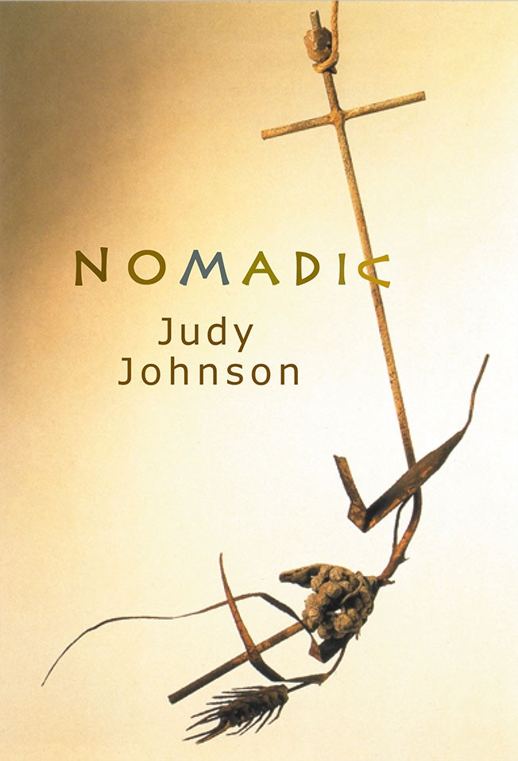

Nomadic
Judy Johnson

Description
This afternoon while looking for my watch I found a love letter from your mistress In 1947 while searching for his lost goat a Bedouin boy found the Dead Sea Scrolls The poems in Nomadic fuse myth, culture, history and emotion. Judy Johnston is alert to the complex interplay between the external world and the often terrifying inner one we carry with us. An earlier version of this book won the Wesley Michael Wright Prize. This powerful collection deals eloquently and humanely with the difficulties of experience. There are many fine psychological studies taking us into worlds of childhood and adult pain, while being equally sensitive to private rapture. I am struck by how much gets into these poems - how much openness, how much imagination. Peter Boyle Judy Johnston’s poems are strong and surefooted. The world has presence: animals, voices, histories, objects are all given existence through her remarkable understanding and curiosity. This is a poetry at once worldly and refined. Judith Beveridge
Description
This afternoon while looking for my watch I found a love letter from your mistress In 1947 while searching for his lost goat a Bedouin boy found the Dead Sea Scrolls The poems in Nomadic fuse myth, culture, history and emotion. Judy Johnston is alert to the complex interplay between the external world and the often terrifying inner one we carry with us. An earlier version of this book won the Wesley Michael Wright Prize. This powerful collection deals eloquently and humanely with the difficulties of experience. There are many fine psychological studies taking us into worlds of childhood and adult pain, while being equally sensitive to private rapture. I am struck by how much gets into these poems - how much openness, how much imagination. Peter Boyle Judy Johnston’s poems are strong and surefooted. The world has presence: animals, voices, histories, objects are all given existence through her remarkable understanding and curiosity. This is a poetry at once worldly and refined. Judith Beveridge
{kind=link}
Information
| ISBN | 1876044438 |
| Release | 2004 |
| Pages | 111 |
About the Author
Reviews
Mattoid Review
Moving Against Complacency Nomadic Kristen Lang Mattoid , No. 55, 2006 There is a startling range of poems in Judy Johnson’s new collection, covering subjects and settings that travel from loss to lovemaking, from cannibalism to a cure for stagnation, and from New Guinean forests to shipwrecks in Western Australia. There is great contrast, too, in both tone and accessibility. Captivating poems, the varied creations of a strong and original poet, appear beside works in which abruptness and incongruity render involvement difficult. Three sequences stand out, each as exotic as the other. Anoint your skin with dapples of burnt butter and charcoal. Look up at the tree you have chosen. Take note of the muscular folds This from ‘The African Spider Cures’, where each image drums a rite of passage one feels it would be perilous to ignore. Even absurdity is here contagiously buoyant - one tends to believe, almost smiling, that ‘under each foot / you will have sprouted the softest grade of toothbrush.’ ‘Three Faces of Shiva’ is as fluently persuasive. In its first poem, a man imagines he is the son of Shiva and Vishnu riding Brahma in the guise of a tiger down the length and breadth of Mohammed Ali Road. Without pretending to be African or to be Indian, each sequence plies its borrowed influences to yield a fresh and convincing vision of human realities and possibilities. With great beauty, ‘Three Faces of Shiva’ paints images of faith and doubt, ambition and destiny, and of prayer and death. In one scene, a woman descends into a river to pray and is described so intimately it is possible almost to breathe with her. There is no more moving way to consider what prayer is. In ‘The African Spider Cures’, coherency is sustained through a commitment to ‘cures’ for, in turn, disappointment, self pity and stagnation. The mood is all-embracing, the locations specific (Kenya, Kampala, Cairo, Fez...), and the effect delightful. Each poem is built from directives (the addressee is ‘you’ -’your hair’, ‘your jaw’, ‘your predicament’) so cleverly phrased and paced as to effect, rather than tyranny, a sense of licence and thrill (like being whipped with strange coloured tulips). In the second poem, one of these directives is so cheekily and pleasantly personal as to elicit almost immediate admission to its simultaneous accusation. ‘It’s time to admit’, the poem insists, ‘you did not come to this cure to relieve your self pity, merely to indulge it’. The merriment is not insubstantial - the mind, here, suffers no boredom. ‘New Guinea Mission’ is a sequence in a different style again. These poems tell of a failed attempt to bring God into the jungles of New Guinea, and do so through the private voice of the only member of the expedition who does not turn back. Rhythmic and narrative strength support images that other contexts would perhaps deny: ‘The sunset, a sheet / of clotted metal seeping into the trees’, and, ‘The hollow cores of roots / sucking at their own reflections / from pools of fetid water’ are here persuasive. Indeed, belief and anticipation are the rule from the outset of these poems. The finally revealed fate of the missionary does not disappoint. For this reader, the sequence yields the best poems of the collection. Nomadic offers many moments of brilliance. A seven-year-old’s response to her father’s death becomes ‘Girl on a Paling Fence’. Here, rhythmic tension matches a balancing of both body and mind as the girl ‘spacewalks’ on the fence around her garden. The attention to detail (the girl looks down, for example, ‘to two striped feet with their strapped-in cargo of toes’) tilts the emotional weight of the poem on a fragile edge, compelling reading. The work’s sister poem, ‘Photography at Dingo Creek, 1967’, in which the same girl, aged six, is photographed by her father as she swims, is still more powerful. Fine control in sound and sense lend a secure and deep intimacy. The daring with which Johnson writes, the risks taken to describe toes as cargo, gills in timber (‘Diving the Westralian Coast’), death as a phone conversation between lovers (‘Five Poems of Light’), and to compare, as occurs in ‘Nomadic’, the finding of a letter from a husband’s mistress to the finding of the Dead Sea Scrolls, are never guaranteed of success in the eyes of individual readers. It is perhaps to be expected that where the degree of daring is high, the number of poems that do not ‘sing’ for a specific reader will also be significant. ‘Rainforest Bats’ is indeed one of many poems offering images I cannot amalgamate. In this poem, the ‘ghosts of orgasms’ drift ‘along the branched-ether / of urban streetlights and into the rainforest, where each inhabits a small, furred bat in the canopy’. It is a cumbersome journey. Without pause, the bats are to be placed on a ‘green abacus’ and given voices ‘reminiscent of our playful pillow talk’. The poem doesn’t stop here, stacking image on image without sufficient scaffolding for the climb into any sense of honesty. In ‘Rainforest Bats’, the density of Johnson’s imagery falls into clutter, a bombardment without a frame, or light that has been confused by too much shadow. In the sequence, ‘Encountering Easter Island’, we are given a report: The ocean and a backdrop of sun are confused and her vision is trapped between horizon and the rim of window remembering the first mammogram This, too, is a difficult moment to absorb. In the strain of navigation (from ocean to sun, to the horizon, the rim (which rim?) of a window, the past, and finally to the subject of breast cancer) there is no time or room for empathic involvement. Simplistically, we are told, ‘With the tenacious amnesia / of a schoolgirl, she erased / what the Doctor had said / one hundred times / on the blackboard of her mind’. Too absurdly, we learn how, ‘her body seemed eager to fly / like an open book, hinged / at the spine and fluttering to wings.’ There is no space, here, for the tenderness that seems to be invited. The number of such obstacles in Nomadic is disconcerting. To visualise ‘the cliff wind coaxing his eyebrows to wings’ (‘Towards the Edge’), or a hand as ‘a lesser, broken string / of knuckles to be counted over / and over like rosary beads’ (‘Hands’) is to engage in a gymnastics of the imagination that is beyond me - both beautiful ideas are marred by their own physical impossibility. It seems necessary to mention that a further cause of doubt regarding the poems in Nomadic rests with their appearance on the page. The lines in near to half of the poems are longer than the page is wide. The disruption is severe. Single words are often stranded on an indented second line. From ‘Diving the Westralian Coast’, for example: Off the Houtman Abrolhos, you descend to a place where all motion frays. Fish and corals waver to an outline that could be port holes of a ship’s hull, or giant wedding rings for a Jules Verne eight-tentacled bride. It is sometimes difficult to tell whether a sense of brokenness or disjointedness in a poem arises from this violent distortion or from the poem itself. It is an awful complaint to have to make. Abruptness, distortion, and confusion do not deny the moments in this collection of tremendous beauty and delight. Nomadic does not carry a strong sense of unity. It does contain, however, instances of brilliance for which all else is, while perhaps not forgiven, certainly tolerated. The strength worth seeking and returning to in this collection is also worth returning to here. In ‘Five Poems of Light’, a woman travelling home to her dying mother informs us, ‘It’s worth the dizziness, the confusion of an ox brain yoked to its own / forward motion, to turn the train seat / backwards, show some resistance / to the future.’ There is an insistence, here, on pushing the mind and body to where it will feel most pressed, and in a sense most alive. If there is one thing to cherish in Nomadic it is this move against complacency.
Antipodes Review
A Wandering Imagination, Freeze-Framed Nomadic D’Arcy Randall Antipodes , Vol. 18, No. 2, December 2004 (pgs 185-186) [Text not yet available]
Westerly Review
New Poetry 2003-2004 Adrian Caesar Westerly , Vol. 49, November 2004 In the prefatory pages to Judy Johnson’s Nomadic , we not only have the usual list of acknowledged periodical publications, but also a list of some ten or eleven prizes her poems have won. The collection has also had the assistance of the Australia Council. Johnson is unlikely, therefore, to be unduly worried by my carping. But almost every poem in this volume seems to me to fit [Amanda] Lohrey’s description of fireworks above [the ‘literary writer’ has ‘a verbal facility... they’re like... a set of fireworks that can just toss adjectives or esoteric words into the air at random and link them up in some fascinating and preferably obscure way - which suggests that the writer is ineffably more clever and sensitive and deep... than the reader’ has ‘ taken hold in several critical circles’.]. As an added extra, there is a kind of specious exoticism at work in many of the poems, which locates their imagery in the Middle East or New Guinea or India or the West Australian outback, anywhere, it seems, other than the Newcastle, where Johnson lives. The opening poem of the book is also the opening poem of the Nomadic sequence; it is entitled ‘Shape’ and begins like this: This afternoon while looking for my watch I found a love letter from your mistress. In 1947 while searching for his lost goat A Bedouin boy found the Dead Sea Scrolls. There is no connection between the two events. This is plain enough, but plainly unhelpful - an anti-metaphor pointed out by a banal and bathetic line. Here’s how the poem proceeds: I exist continents away from the Qumran monastery. And words on paper predicting a future cannot compare with copper scrolls etched with clues to a biblical past. Yet I encounter coincidence. As a snail shell may only reveal the extent of its secrets when the snail is crushed, so each ancient carapace crumbled as it unrolled. And I am broken also, unravelling this script from eye to tongue. It is not so much the shell that cannot take the pressure. It is the space beneath the shell, that once upheld its shape. The poet is right, of course: one cannot compare the discovery of a love letter with the discovery of the Dead Sea Scrolls. So why are we bothering? Because of a ‘coincidence’. What this coincidence might be is not vouchsafed us - the date, perhaps? Maybe the letter is her father’s. Yet the next poem in the sequence seems to be about the poet’s marriage. Who knows? What is certain is that the poet is not going to help us out, because that would make it all too easy. Returning to the ‘coincidence’, we also return to the tortured syntax of the next sentence and the even more tortured simile and metaphor it introduces. Leaving aside for the moment the ‘secrets’ of the ‘snail shell’, let’s consider the way the simile unhinges following the word ‘so’. The first term of the simile is about the relationship between shell and snail; the second concerns the shell only: we are asked to consider the unlikely possibility of an ‘unrolling carapace’. What are the referents of this metaphor? If the scrolls or the letter or the poet are like the snail shell, where or what or whom is the crushed snail? The rest of the poem does not help. The poet (like the snail and the shell) is also broken - so much is clear. But then a third term is introduced to the metaphor i.e. the ‘space beneath the shell’. That would appear, appropriately enough, to be air - hot perhaps? The metaphor doesn’t work. And the point of a comparison (which isn’t a comparison) between the love letter and the Dead Sea scrolls remains obscure. I cannot leave this book without also mentioning a poem called ‘Towards the Edge’ which describes a man ‘drunk and naked on the cliff top’, who is ‘spinning on his body’s axis’. The middle stanza describes an ‘aerodynamic principle / that has his penis flare outwards like a / helicopter blade’. One would have thought that a drunk behaving in this manner on a cliff top had enough problems without this serious anatomical worry, which beggars exegesis.
Blue Dog Review
Nomadic Robyn Rowland Blue Dog , Vol. 3, No. 6, November 2004 There is a deep satisfaction in reading poetry when its craft presents us with an innovative way of viewing imagistic connection, or surprises us with unusual juxtapositions of objects and nature. Judy Johnson invites us in Nomadic to journey with her like this, both through time and place, and through threaded images, into the heart of those things that matter to her. At the personal level, there is the end of love; the small child closeted literally in the past; a girl dealing with her father’s death; her father’s love frozen behind photography and her mother’s passing away. At the political level, there is the poet’s desire to hold up to us our own unjustified dissatisfaction with life compared to, for example, the deprivation and suffering of Africa. Her first book, Wing Corrections (Five Islands Press, 1998) contained well-crafted short poems that used a brightness of image powerfully. In Nomadic , this skill with images has expanded into a mature and more complex form. Often, rather than evoking feeling, the poems strike the reader with awe at the turned image, at the way they clarify understanding. The craft is impressive. Here mere are chains of images - lines on a map perhaps - often discrete and seemingly disconnected objects or creatures, that become our trail: theirrelationship to each other exposed by the poet so that we see them anew, reshaped. In ‘Girl on a Paling Fence,’ we move from the image of the girl balancing on the fence, to her dead father lying in the house, ready for visitors. The experience is woven through a sweep of particulars that draw us into a visual picture of the moment. The girl’s sandals are blue, like the colour of a plastic necklace of her mother’s that the girl once broke and hid, ‘piling its kaleidoscope of / planets into a box under her bed. Now she threads herself / along the string offence...’. We look down at the the girl’s ‘two striped feet with their strapped-in cargo / of toes’. Her mother is drowning in grief: ‘all morning her mother’s / eyes have been brown stones sinking beneath the weight of / water’. The girl has taken objects from her father’s bedside table - a tobacco tin and a pipe: she doesn’t touch ‘the heaviness of the objects she has taken for fear of a similar drowning / ...She keeps the two apart by the warmth of a body-width. She measures their coldness this way / as she measures the fence / by the flat spaces where she can place her feet and not by the spikes that divide them ’ . Finally, her lonely grief is caught as she balances ‘...the pipe on one side, tobacco tin / on the other and in the middle, her unlit heart’. Johnson has a deft hand with nature. I am delighted by the variations on the moon that as a crescent in ‘Excavation’ (‘Nomadic’ sequence) ‘hangs like a pale cheese in a muslin sack’, and transforms into ‘the ghost gum moon’ in ‘Thirty-four years on’. In ‘Going home for her dying’ it becomes ‘that jack-o-lantern tuber, / the moon, the colour of pumpkin the only way my mother liked it. Rind / as hard as charity and inside, the flesh dry as orange dessicated coral’. In her hands, the ocean is brim-full of intent, of secrets and of a fever for understanding. In ‘Shipwrecks’ ‘The ocean / mocks the geometric absolutes land aspires to, and surface / becomes another dimension, as the breeeze-pampered sailcloth / of your skin adapts to the heavy press of atmospheres’. ‘Diving the Westralian coast’ leaves us ‘just suspended at the / border between estrangements’. In the captivating poem ‘The Way a Lighthouse Knows her Keeper’, it is the inanimate lighthouse made living that holds the keeper above the ‘caw and cackle of ocean’ the ‘colour of that middle-blue Faber / Castelle pencil’. In another fine poem, ‘Stone’, it is the land that becomes animate as it draws the carvers to itself ‘yearning for transformations’. ‘Stone predicts in its own time and way’ and as the suicide falls, it is practising its shapechanging. The faster they fall, the smoother // and more impassive the face, until those who go this way are so reminded / of their own elusive god, that in the end the brokenness barely surprises them ’. Johnson knows that she’s playing the line between image and reality; between image and its meaning; between image and feeling, felt and conveyed. ‘Image’ she warns, ‘divides us from who we really are’ (‘Light and skin’). She is at her best when interlocked images flow from her naturally, without expectation. It may fall flat though, when the stretch of the image is overdone and the poem seems to be trying too hard to find that odd juxtaposition which is her forte. In ‘The Giant Statues and the Birdman’ (‘Encountering Easter Island sequence’) the statues are ventriloquists that moan in the wind ‘exhaling warm breath on summer nights / like honey mixed with talc’. Here the lightness of breath and talc, mix uncomfortably with dense honey, so the line doesn’t succeed for me. A lot is travelling on those directed collages of image. They frequently set us up for the last significant lines. Nature and animals are often transformed into otherness, our selves in some form, so that we are enticed to anthropomorphize ourselves in order to find the nub of meaning in the poem; in life. In ‘Amphibian’, there is a merging of lover with tadpole/frog. In ‘Rainforest Bats’ the ‘ghosts of orgasms’ drift from bedrooms to inhabit the bats and their squeaks are ‘our playful pillow talk’. The ‘points of inevitability we pass in / lovemaking acts’, ‘move us towards a larger dying’. The rustling of leaves and bats in the forest leaves us ‘ ...unable to decide if the corresponding flutters we feel / are the beginnings of arousal, or the unfolding wings of fear ’ . In ‘The African Spider Cures’, a substantial and complex sequence, we are to become the spider, to ‘lurch side to side... / until you feel the shuffle of fine hair on your legs and back... extend your incisors...’. This sequence takes us wandering through Africa: its colour, its pain, its endurance. We are shown how we weave our discontent while others live life hard. Inside the spider - trapdoor, huntsmen - on the floor of the forest or strung across the river - we are without language and can ‘consider the wisdom of silence’. We are admonished to admit our self-pity, our inner poison, and in our smallness, the animal we have become: ‘ Watch it twist and turn inside the silk it’s rolled in, stuck to / what you are determined it will neither die of, nor escape from / while ever you are so dexterous at weaving discontent ’ (‘2SelfPity’). The web becomes the image of entanglement, of connection, of death, of safety, of buoyancy and of persistence. The web itself is a powerful symbol: when spider webs unite, they can tie up a lion, so the Ethiopian saying goes. Spider silk itself can be curative. I’m searching for meaning here. We are I think, left with the poet’s own challenging ambivalence in the meaning of the spider’s cure. Moving from the creation of a drum from the Baobab tree, as spider we move up into the trees, along the Argungu, thrown from Krakatoa, through Kampala alongside the Masai, into Levubu, Fez, Morocco, Somalia, the Sahara and finally Victoria Falls. All the while, the harsh driving tone of the poet is making sure we haven’t missed the sharp edges of the journey. And why? To drop our easy self-indulgence, our one-eyed first world vision, while recognising the connections between all things and the web that holds us: ‘ Take it as a sign. Know that there’s nothing else for it, but to persist. / It’s either that, or stand stiff as a cliff-edge old testament prophecy / and be eroded just the same, while the migratory world keeps falling and falling ’ . In this sequence Johnson also reveals her poetics, her process. In ‘Flying’ in her first book, she wrote: ‘ Not so easy to dismantle the puzzle / and see flying for what it is, / what most things are: // a set of compromises - a series / of subtle wing corrections / to make the pieces fit ’ . Reminiscent of this unveiling, she writes in ‘ The African Spider Cures’: ‘ ...Let these images collide, as well as all those other / childhood antidotes and poisons. Allow each its own freeze frame, but see // how they are all recorded against the same backdrop, so. like an early / animation, the light thumb of dreams may flick through the pages / creating a seamless movie ’ (1. Disappointment). This ‘freeze frame’ recurs throughout the book as method and image: in ‘Heat’, ‘Thirty-four years on’, ‘Watching the storm’ (in ‘Five Poems of Light’). In ‘Photography at Dingo creek, 1967’ the father photographer misses the lived moment to capture it in the camera, ‘her childhood / preserved like the fossil of some sea-going creature ...to trap her in the infinitesimal shutter-speed wink / between the moment and the moment’s loss’. Ironically, she is caught too, between the living of it and the recording of it. Yet here is a purpose of poetry: to be the snapshot album of moment. Interestingly, poems about a girl’s father dying that occur in three poems, speak from the third person. Yet the poem on her mother’s dying is first person direct. In these poems feeling is more strongly conveyed in comparison to the more distanced, yet finely crafted, ‘traveller’ works, through Easter Island, New Guinea, Africa. Personally, I like to be moved by poetry, and the title sequence, ‘Nomadic’, which captured the sadness of a relationship ending, and the familial poems, are closest to the heart. The ‘Five poems of Light’ for the poet’s mother are deeply moving and loving poems, as Johnson remembers a childhood (‘childhood splinters are working their way out’ we are told in ‘Splinters’) through to her mother’s death. Some of the strongest writing is here, with its crisp imagery, moving narrative and precision of craft. I love the crystalline beauty of ‘3. The Day of the Toboggan - Kosciusko 1973’ and the beautiful flowing lines following a kite outside the hospital window to the inevitable death: her mother ‘hungry all her life’, at the end ‘...relaxed on the pillow, intent on becoming the bone / the flesh spends all its life peeling back from in incidental layers. // Until, by nightfall, the spars shone through, devoid of unnecessary material: a frame / that the air eventually lost patience with supporting // and plummeted to earth. Leaving nothing to show she had ever flown except, // in the broken room, still attached, // our long trail of sorrow’ (5. Her Last Day). Rarely does Johnson seem uncertain of what she wants to convey. But with the folding and unfolding of image, there is a risk that purpose outside image might become lost, the poem fading merely into a made thing, an artifact. ‘Heat’ might be one of these, the concluding lines falling diffidently, compared to the wonderful twisted word usage of ‘Splinters’ with its ‘lung-thirst of sawdust; a smell of / imprisoned forests and hard rain sifted / from an axe-cut sky’. I felt that the two sequences following Chinese poetry read a little like exercises in mimicry, detracting from Johnson’s own voice. Line endings seem crucial to me in the creation of the poet’s voice: the voice that captivates; that guides; that invigorates or impassions. Line breaks direct the living pulse of breath, with its essential shadow - stillness/no breath. The breath units of voice drive the rhythm of the poem, which is crucial to the success of free verse poetry. Sometimes movement into varying form on the page enhances the quality of directness in communication of voice. Johnson wrote in ‘The woman who painted the sky’ ( Wing Corrections ): ‘the critics said for years she was too predictable, / painting only one shade of sky’ …so ‘in the end she compromised’ - ‘they said her art had come of age, / but it felt like selling out’ and ‘she never had the dream again where her body / let go its own blue centre and spiralled / up to light like egg white / in glass blown air’. This is always the risk of falling for fashions in form, and Johnson tells us here that she knows it. So I felt disappointed when I read the prose poems. Unpunctuated, they made the inner reader stumble looking for breath, trying to find a flow that was blockaded by an invisible fence. They seemed to lack the energy and intensity of the free verse forms. I was, however, delighted to find such faults, bearing in mind the Persian carpet makers’ belief that flaws have to exist in, or in fact need to be added to, the best of rugs to ensure the weaver will not be struck down for impersonating the perfection of god. Nomadic carries the weft and weave of well-made poetry, and for this, it is a pleasure to read.
Books and Writing, Radio National
Nomadic Geoff Page Books and Writing , Radio National, 25 July 2004 It is difficult to find a single poem in Judy Johnson s first full-length collection Nomadic , that one could consider typical. As with most first books, the poems range widely in theme and technique but the poem ‘Her Last Day’ is a good starting place. Like many other pieces in the collection, it moves at a leisurely pace and chooses its metaphors carefully but seemingly without effort. The literal kite that accompanies the poet’s mother s last afternoon is seen as a ship or maybe a bird. The uncertainty mirrors the mother s dialogue with death, the tug and let go of things. In some ways, the poem is an essay as much as it is a story. The phrase for instance precedes the stunning simile for the way neither the mother s heart nor lung will hang up first. They are like lovers on the phone to each other. The fragility, the delicate balance of the dying woman’s situation, is elaborated in a series of images increasingly emphasising her insubstantiality. Eventually there is nothing to show that she has ever flown except in the broken room, still attached, our long tail of sorrow. Johnson’s particular ability is to take an image and develop its full potentiality through a series of closely-related images, each one adding emotional force to the original premise. The images are not simply logical deductions, nor are they free flights of surrealism; rather they are something in between with the characteristics of both. Sometimes, as in ‘Sequence in the Style of the Liang’ and ‘Sequence in the Style of the Chin’, Johnson is able to inhabit another culture and historical period and discover perennial truths in a style which is obviously derivative at one level and yet, at another, seems to have much of the same force, as many of the best poems are written in the time and place chosen. She also has a particular feeling for the geography of the Pacific, its cultures and the colonial or quasi-colonial ventures which occur there. ‘Encountering Easter Island’ is an early example, and the book finishes with two sequences of this kind: ‘New Guinea Mission’ and ‘From the Journals of Robert Louis Stevenson’s Mother’. The latter comprises five unpunctuated prose poems, showing the same sharpness of observation that Stevenson himself was noted for. Johnson has his mother displaying more than a little wry humour at the cultural gap horizontal rather than vertical between herself and the Polynesians. In ‘Long Pig’, for instance, one elderly man explained that the hand had been his favourite morsel because he could accommodate each finger one by one in his mouth. Undeterred, Mrs Stevenson tucks in to the roast boar but assures the reader after some exchange of gifts to cement family connections that under no circumstances shall I turn cannibal to fit in with our new found relatives. All this should not give the impression that Johnson is concerned only with the exotic. There are many poems rooted solidly in Australian landscapes, both literal and emotional. ‘Photographs of my Great Grandparents’ is just one example, so too are ‘Stone’, ‘1950s Bedroom Cupboard’, and ‘Heat’. All are concerned with mental states but all have their parallel, and often their origins, in particular Australian geographies. Johnson is obviously influenced by the poetry of other cultures, including the American, but there is no mistaking her Australianness. Not necessarily a virtue, of course, but nevertheless an important part of the book’s likely reception by Australian readers. It is worth noting too that Judy Johnson has won an extraordinary number of poetry prizes. Given the makeup and vagaries of some judging committees, this is not always significant but in Johnson’s case one can see what impressed such a wide variety of judges. Johnson seems to know how to really get into a topic. She is not one to just sketch an attitude and let it go at that. She wants to investigate the thing more thoroughly and does so by poetic means rather than those offered by either academic research or standup comedy, to name two frequently used alternatives. Along with Bronwyn Lea’s and Adrienne Eberhard ’s first books, Judy Johnson’s Nomadic is certainly setting a higher standard for first collections than we had become used to just a few years back.
The Canberra Times Review 2
Perennial Truths and Sharp Observation Nomadic Geoff Page The Canberra Times , 26 June 2004 Newcastle poet Judy Johnson, who has just published her first full-length collection, has already won an extraordinary number of poetry prizes. Given the make-up and vagaries of judging committees this is not always significant but in Johnson’s case one can readily see what impressed such a wide variety of judges. Johnson knows how to really get into a topic. She is not one to just sketch an attitude and let it go at that. She wants to investigate the issue more thoroughly - and does so by poetic means rather than through academic research or stand-up comedy, to name two frequently used alternatives. In poem after poem in Nomadic Johnson takes an image and develops its full potential through a series of closely related images, each one adding force to the original premise. Such associations are not simply logical deductions; nor are they free flights of surrealism. Rather they are something in between, with the characteristics of both.One can see this process in her ‘Sequence in the Style of the Liang’ and ‘Sequence in the Style of the Chin’. Here Johnson proves herself well able to inhabit another culture and historical period. In them she discovers perennial truths via a style which is obviously derivative at one level and yet, at another, has something of the same force as many of the best poems written in the original time and place. Johnson also has a particular feeling for the geography of the Pacific, its cultures and the colonial (or quasi-colonial) ventures which occurred there. ‘Encountering Easter Island’ is an early example and the book finishes with two sequences of this kind, ‘New Guinea Mission’ and ‘From the Journals of Robert Louis Stevenson’s Mother’. The latter comprises five unpunctuated prose poems showing the same sharpness of observation that Stevenson himself was noted for. Johnson has Stevenson’s mother displaying more than a little wry humour at the cultural gap (horizontal rather than vertical) between herself and the Polynesians. In ‘Long Pig’, for instance, one elderly interlocutor explains that the hand used to be ‘his favourite morsel because he could accommodate each finger one by one in his mouth’. Undeterred, Mrs Stevenson tucks into her ‘roast boar’ but assures the reader, after some exchange of gifts to cement family connections, that ‘under no circumstances shall I turn cannibal to fit in with our newfound relatives’. These examples should not, however, give the impression that Johnson is concerned only with the exotic. There are many poems rooted solidly in Australian landscapes, both literal and emotional. ‘Photographs of My Great Grandparents’ is just one example. So too are ‘Stone’, ‘1950s Bedroom Cupboard’ and ‘Heat’. All are concerned with mental states but all have their origins in particular Australian geographies. Johnson is obviously influenced by the poetry of other cultures, including the American, but there is no mistaking her Australianness - not automatically a virtue, of course. Nevertheless, it will, I suspect, form an important part of the book’s appeal to Australian readers. There have been several outstanding first collections of poetry recently (those of Bronwyn Lea and Adrienne Eberhard spring to mind). Judy Johnson’s Nomadic is also in that class.
Island Review
Review Nomadic Andrea Breen Island , No. 98, Spring 2004 The poems in Judy Johnson’s collection Nomadic cut to the quick. Each one voices the internal struggle for self-understanding and they are expressive too of the baffling experience of living in the external world. Structurally, these poems shift between concise formal poems and longer experimental forms, such as ‘Three Faces of Shiva’ where enjambment, gaps between words and single lines widely spaced work to test the reader. This fractured structure is congruent with the images and subject and suggests linguistic stumbling. We watch from further out on a small leaf-shaped boat not knowing what to make of the single human hand that floats past nor the purifying tiger that roars and crackles on shore sears with its dozen burning eyes. In some senses this collection is like a travelogue, as many poems recall destinations visited by the traveller. In ‘Heat’, the discomfort of searing temperatures, for an anonymous woman subject, suggests universal experience: There is no sign of rain and the woman has not yet dropped the steaming paleness of her dress near the fence and let the sky fall in medusa tongues. But it will come... The volume connects with a wide range of women’s experiences, such as in the free form poem ‘My Dressmaking Aunt’: ‘...the gravity of choices never made bearing down or what fell to the floor day after day the scraps she made a life of when all the matrons had gone home’. These songs from lived experience that are Judy Johnson’s poems tell many tales in an assortment of ways. The fragmentation of structure is sometimes disconcerting yet this volume makes very good bedside reading.
Australian Book Review Review
Beyond Matter Oliver Dennis Australian Book Review , No. 262, June/July 2004 ... Let these dreams collide, as well as all those other childhood antidotes and poisons. Allow each its own freeze frame, but see how they are all recorded against the same backdrop, so, like an early animation, the light thumb of dreams may flick through the pages creating a seamless movie. In these lines, taken from ‘ The African Spider Cures ’ , Judy Johnson might almost be describing her poetics. Nomadic , Johnson ’ s second poetry collection, consists of well-made poems that combine objective views of the world with snippets from the poet ’ s personal life. In the title poem, which centres around a recent separation, Johnson compares her experience of finding an illicit love letter with a Bedouin shepherd-boy ’ s chance discovery of the Dead Sea Scrolls: ‘ There is no connection between the two events, ’ she writes, ‘ Yet I encounter coincidence. ’ Throughout the book, Johnson brings together mythology, family history, travel scenes and childhood memories; but, whatever the subject, there is always a strong emotional element in her writing. It is particularly evident in Johnson ’ s moving conclusion to an elegy for her mother, who ‘ [l]eaves nothing / to show she had ever flown except, // in the broken room, still attached, // our long tall of sorrow ’ . One of the major strengths of this poetry is its ability to surprise and unsettle the reader with ingenious imagery or phrasing. While Johnson has an occasional tendency to indulge in overly elaborate explication ( ‘ The African Spider Cures ’ , for example, uses up a lot of space, only to make a fairly lame point about the importance of keeping one ’ s grievances in perspective), many of her lines bear witness to an admirable restraint. Consider ‘ My limbs by association climb the walls ’ ( ‘ Possibility ’ ) and the following account, from ‘ Girl on a Paling Fence ’ , of ‘ two striped feet with their strapped-in cargo of toes ’ . Indeed, it comes as little surprise to find that Johnson has been inspired to imitate the poetry of two early Chinese dynasties, the Liang and the Chin. The best of Nomadic owes much of its success to the constraining influence of form. For an imagination as restless and enquiring as Johnson ’ s, there could be no better foil.
The Canberra Times Review 1
Using Poetic Images to get to the heart of the matter Geoff Page The Canberra Times , 1 May 2004 Newcastle poet Judy Johnson, who has just published her first full-length collection, Nomadic , has already won an extraordinary number of prizes. Given the make-up and vagaries of judging committees this is not always significant, but in Johnson's case one can readily see what impressed such a wide variety of judges. Johnson seems to know how to really get into a topic. She is not one to just sketch an attitude and let it go at that. She wants to investigate the issue more thoroughly and does so by poetic means rather than through academic research or stand-up comedy, to name two frequently used alternatives. In poem after poem in this book, Johnson takes an image and develops its full potentiality through a series of closely related images, each one adding force to the original premise. Such associations are not simply logical deductions; nor are they free flights of surrealism. Rather, they are something in between, with the characteristics of both. One can see this process in her ‘ Sequence in the Style of the Liang ’ and ‘ Sequence in the Style of the Chin ’ . Here Johnson proves herself able to inhabit another culture and historical period. Here she discovers perennial truths in a style which is obviously derivative at one level and yet, at another, has something of the same force as many of the best poems written in the time and place chosen. She also has a particular feeling for the geography of the Pacific, its cultures and the colonial (or quasi-colonial) ventures which occurred there. ‘ Encountering Easter Island ’ is an early example, and the book finishes with two sequences of this kind, ‘ New Guinea Mission ’ and ‘ From the Journals of Robert Louis Stevenson's Mother ’ . The later comprises five unpunctuated prose poems showing the same sharpnes of observation for which Stevenson himself was noted. Johnson has Stevenson ’ s mother displaying more than a little wry humour at the cultural gap (horizontal rather than vertical) between herself and the Polynesians. In 'Long Pig ’ , for instance, one elderly interlocutor explained that the hand had been 'his favourite morsel because he could accommodate each finger one by one in his mouth ’ . Undeterred, Mrs Stevenson tucks into her ‘ roast boar ’ but assures the reader, after some exchange of gifts to cement family connections, that ‘ under no circumstances shall I turn cannibal to fit in with our newfound relatives ’ . These examples should not, however, give the impression that Johnson is concerned only with the exotic. There are many poems rooted solidly in Australian landscapes, both literal and emotional. ‘ Photograph of My Great-Grandparents ’ is just one example. So too are ‘ Stone ’ , ‘ 1950s Bedroom Cupboard ’ and ‘ Heat ’ . All are concerned with mental states but all have their parallel - and often their origins - in particular Australian geographies. Johnson is obviously influenced by the poetry of other cultures, including the American, but there is no mistaking her Australian-ness - not necessarily a virtue, of course. Nevertheless, it will, I suspect, form an important part of the book ’ s appeal to Australian readers. There have been several outstanding first collections of poetry recently (those of Bronwyn Lea and Adrienne Eberhard spring to mind). Judy Johnson ’ s Nomadic is also in that class.